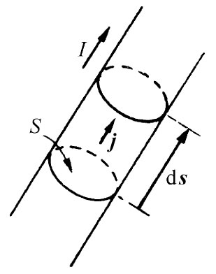
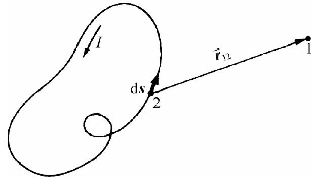

我们经常感兴趣的是导线直径与整个系统的线度相比非常小的那种电路所产生的磁场。在这种情况下，我们就能简化磁场的方程组。对细小导线来说，我们可以把体积元写成
dV=Sds，
式中S是导线的横截面积，而ds则是沿导线的距离元。实际上，由于矢量ds与j方向相同，如图14-9所示（而且我们也可假定，j在任一给定截面上各处保持不变），我们便可写出一个矢量方程：
jdV=jSds. （14.37）
但jS恰好就是我们所称的导线中的电流I，因而关于矢势式（14.19）中的积分就变成
（见图14-10）。我们假定通过电路的电流处处相同，但若有几条各载有不同电流的支路，则对于每条支路当然就应各自采用适当的I。
|  |  |
| 图14-9 对于一根细小导线来说，jdV与Ids相同 | 图14-10 导线的磁场可以通过环绕该电路取积分而获得 |
我们又一次可由直接对式（14.38）进行积分或由对相应的静电学问题求解而把场求出来。